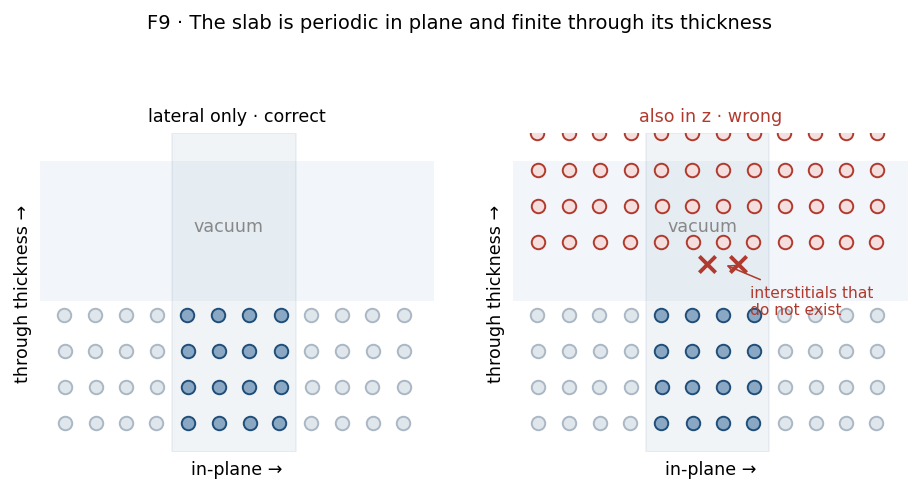

Stage 4 — Subsurface site mapping¶
Purpose¶
Find the interstitial sites inside the slab, classify each by its coordination, and connect the surface to the first subsurface layer and that layer to the second. This produces the site graph the hop pathways are built on, and the environment labels the solubility sum is grouped by.
At a glance¶
Inputs |
the relaxed slab; the surface sites from Stage 3 |
Outputs |
classified interstitial sites with environment labels; a surface→first→second mapping |
Code |
|
Prior art |
adapted from the subsurface-graph explainer in |
Concepts¶
Voronoi tessellation. A partition of space into cells, one per atom, containing everything closer to that atom than to any other. Its vertices are the points maximally distant from the surrounding atoms — which is exactly where an interstitial sits.
Octahedral and tetrahedral sites. The two interstitial types in a close-packed lattice, distinguished by how many host atoms coordinate them: six and four respectively.
Environment label. As in Stage 3, but for an interstitial: its coordination count and the elements surrounding it. This is the \(e\) in \(\Delta H_{\mathrm{sol}}(e)\) and \(w_e\).
Procedure¶
Replicate the slab three by three in the surface plane, but not through the thickness. Periodicity is real in the plane and absent through the slab, so replicating in \(z\) would invent interstitials in the vacuum.
Tessellate and take the vertices.
Filter, in order:
keep only vertices in the central cell — the replicas existed solely to give correct neighbours at the edges;
merge vertices closer together than a clustering tolerance;
discard any vertex too close to an atom.
Assign each site to a layer. Two modes, because two kinds of slab:
mode
how
for
rank
equal-count binning by height into a known layer count
metals, whose planes hold equal numbers of atoms
gaps
detecting the gaps between planes
oxides, whose planes do not
Classify by coordination, counting host atoms within a cutoff:
neighbours
class
6
octahedral
5 or 7
octahedral, distorted
4
tetrahedral
3
tetrahedral, distorted
anything else
unclassified, and dropped by default
Label each classified site by its coordination and surrounding elements.
Connect each surface site to the first subsurface site beneath it, within a lateral tolerance, and each first-layer site to a second-layer neighbour.
Design choices¶
Why Voronoi rather than a lattice template¶
A template places interstitials at ideal crystallographic positions. That works for a perfect lattice and fails for everything this workflow cares about: a relaxed surface, a disordered alloy, a distorted oxide.
The tessellation finds interstitials from the actual atomic positions, so a relaxed or disordered structure yields the sites it really has, in the places they really are.
Why replication is lateral only¶

Figure 1. Why replication is lateral only. Look at the vacuum region on the right: replicating through the thickness puts image atoms there, and the tessellation then finds “interstitials” (crossed) in empty space. Schematic.
[!IMPORTANT] The slab is periodic in the plane and finite through its thickness. Replicating in \(z\) as well would place image atoms across the vacuum gap and generate vertices inside the vacuum — interstitials that do not exist. The asymmetry between the in-plane and through-thickness treatment is deliberate and is the one thing to preserve if this step is ever rewritten.
Why distorted coordinations are accepted¶
A perfect lattice gives exactly six or four neighbours. A relaxed alloy surface does not: an octahedral site near a size-mismatched atom may present five or seven.
Admitting a window around each ideal count keeps those sites, which are real and often the interesting ones. The cost is that the boundary between “distorted octahedral” and “something else” is a choice rather than a fact.
Why unclassified sites are dropped by default¶
A vertex whose coordination fits neither pattern may be a genuine feature of a complex structure or an artefact of the tessellation, and from the coordination count alone the two are indistinguishable. Excluding them keeps the site set interpretable; an option exists to retain them when a structure is known not to follow close-packed coordination.
Why the surface connection has a lateral tolerance¶
“The site beneath this one” is only exactly defined on an ideal lattice. On a relaxed surface an interstitial sits slightly off the normal, so the match is made within a lateral window.
[!IMPORTANT] This connection determines which surface sites have an entry pathway at all, and so which environments appear in the solubility sum. A tolerance too tight leaves surface sites unconnected and silently absent from \(w_e\); too loose connects sites that are not really neighbours. Neither raises.
Checks and failure modes¶
symptom |
meaning |
what to do |
|---|---|---|
sites found inside the vacuum |
replication was applied through the thickness |
step 1 — lateral only |
many unclassified sites |
the coordination cutoff does not suit this material, or the structure is not close-packed |
check the cutoff against the real neighbour distance first |
far too many sites |
the clustering tolerance is too tight; one interstitial is being counted several times |
raise it |
sites assigned to the wrong layer |
the layer count does not match the slab’s real plane count |
metals use rank binning, which assumes equal populations; oxides need gap mode |
a surface site has no subsurface partner |
the lateral tolerance rejected the match |
it will carry no entry pathway, and will not appear in \(w_e\) |
one environment holds a single site |
possible, and consequential |
its standard error is recorded as zero, meaning unmeasurable (Part II §10.2) |
[!IMPORTANT] This stage is where \(w_e\) is ultimately decided. The site set it produces determines which pathways exist to be computed, and the pathway count is the weight in the solubility sum ((A-5)). A tolerance changed here moves the final solubility, with no intervening stage that would flag it.